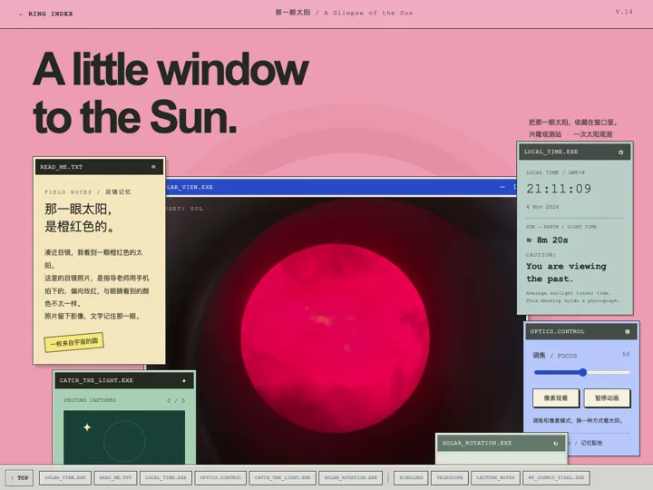
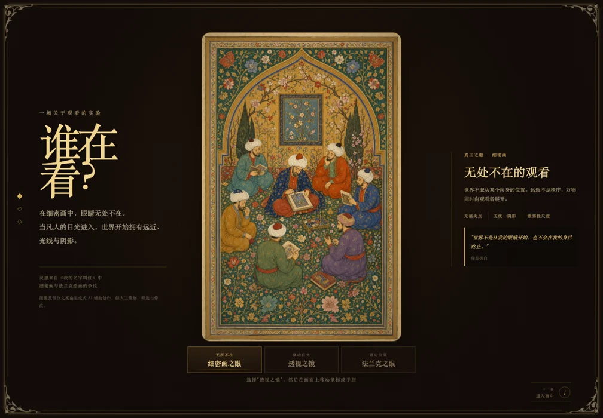
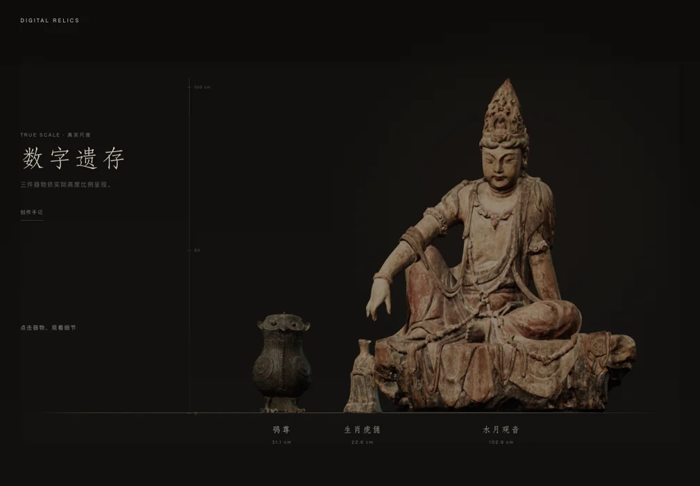

AN OPEN SPACE FOR IDEAS
这些页面，就像我生活的一张张立体照片；
就像一道光，复现那些瞬间的全息影像；
就像未知维度的弦，拨动时间之轴，短暂回到当时，也与未来共鸣。

以环为线索，探索光、自然、时间与记忆的不同形态。
从第一道微光，到河流、群山与林间圆光。一个持续生长的视觉系列。

灵感来自《我的名字叫红》。移动透视之镜，在细密画与法兰克透视之间，体验不同的观看方式。

以真实尺度、实体与点云，重新观看三件文物的数字替身：当文物成为数据，我们保存了什么，又留下了什么？
关于作者 / ABOUT THE CREATOR
我是一个非职业的数字艺术创作者，目前住在中国北京。
我喜欢在自然风光中漫步闲游，也喜欢逛展、听音乐、看电影；对天文物理充满好奇，也乐于了解科技的最新进展。
近一年来，我有了更多闲暇时间。借助日益强大的 AI 工具，我开始以自己生活中的所见、所思、所感为灵感和素材，将它们制作成网页形式的作品。
这些页面就像是我生活的一张张立体照片，或许稚嫩，却无比真实。
Digital Playground 收录了我的大部分作品，就如同一个线上博物馆。随着时光流逝，展品会越来越多，希望精品也越来越多。
交流与联系 / GET IN TOUCH
欢迎分享观看感受、提出问题，或聊聊作品背后的想法。
通过 GitHub Discussions 留言，与我公开交流。需要 GitHub 账号。